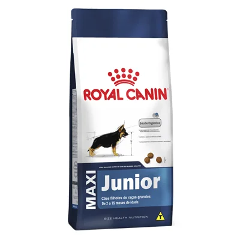

(1).png)
LEALDADE, CORAGEM E INTELIGÊNCIA
CBKC - Grupo 11
ASSIM COMO SEUS ANCESTRAIS, UM GRANDE COMPANHEIRO E VERDADEIRO CÃO DE GUARDA
O cachorro Pitbull, ou verdadeiramente conhecido como American Pit Bull Terrier (APBT), é um pet extremamente carinhoso, leal e inteligente. No entanto, por muito tempo teve sua imagem atrelada a um comportamento rude e agressivo. Ao contrário do que muitos pensam, esse cãozinho é muito dócil, principalmente quando falamos das crianças.
Tanta afeição pelos pequenos o fez ficar conhecido como cachorro-babá, desmistificando o passado da raça, que foi criada para ser usada como cães de guarda e luta. Existem diversas teorias sobre a verdadeira história do Pitbull, levando em consideração os cruzamentos que o originaram e sua verdadeira função.
Condição física
.jpg)
A raça Pitbull sempre chamou muito a atenção por conta do seu porte físico e atlético. Os músculos deste cão são bastante aparentes e demandam uma alimentação especial para permanecerem saudáveis. Por esse motivo, ele se torna um pet extremamente ativo com alta necessidade de passeios, brincadeiras e exercícios físicos.
Um dos mitos que giram em torno das condições físicas do Pitbull é sobre o travamento de suas mandíbulas, afirmando que quando prende algo na boca, é impossível soltá-lo. Pesquisas realizadas com diversas raças relatam que isso não é verdadeiro, apesar da força que esse cãozinho possui e o estilo “tesoura” de sua dentição.
- Expectativa de Vida
- Média de Altura
- Média de Peso
- Nível de Forfura
.jpg)
Características
- É adaptável? Sim
- Requer atenção? Sim
- Apartamento? + ou -
- Late muito? + ou -
- Gosta de gatos? Não
- Gosta de crianças?Sim
- Gosta de cães? Não
- Precisa exercitar? Sim
- É espaçoso? Sim
- Fácil tosar? Não
- Problemas saúde?+ ou -
- É inteligente? Sim
- Gosta de brincar? Sim
- Cai muito pelo? Não
- É sociável? Sim
- É amigavel? Sim
- É territorialista? Sim
- Fácil de treinar? + ou -
- É cão de guarda?Sim
- É friorento? + ou -
- É calorento? + ou -
Rações Para Pitbull
.jpg)
Destaques e Curiosidades
Apesar de muito conhecida, a raça American Pitbull Terrier não é cadastrada na CBKC (Companhia Brasileira de Cinofilia) e, por isso, consta no grupo 11 de raças não reconhecidas pela Federação Cinológica Internacional (FCI). Na companhia constam cães de raças similares ao Pitbull, como o American Staffordshire Terrier e o Staffordshire Bull Terrier.
.jpg)
Cachorro babá
Um dos maiores exemplos do jeito dócil da raça de cachorro Pitbull está nos Estados Unidos! O gigante Hulk, de 80 kg, ficou famoso por seu tamanho e por cuidar dos meninos Jordan e Jackson — este último, de apenas 3 meses.
Conscientização
Em alguns países, o mês de Outubro é dedicado a eventos especiais para quebrar o preconceito que ainda existe em torno da raça. Essas ações ocorrem, principalmente, pelo alarmante número de cachorros eutanasiados e a baixa quantidade de Pitbulls adotados nos Estados Unidos.
No mundo das celebridades
O Pitbull é um cãozinho muito presente no mundo das celebridades. Além de participarem de realitys shows no canal Animal Planet, diversas personalidades são admiradoras da raça. Podemos destacar: Gisele Bündchen, Josh Hutcherson, Jessica Biel, Jennifer Aniston e Fiona Apple.
A História do Pitbull

ORIGEM
Não existem registros oficiais sobre a origem do Pitbull. Entretanto, muitas pessoas acreditam que sua origem se deu no Reino Unido, onde foi criado especialmente para lutar. Estudiosos americanos afirmam que os primeiros exemplares da raça no país são versões do Staffordshire Bull Terrier.
CRUZAMENTOS
Já na América, os primeiros da raça foram vistos exercendo a função de cão de guarda em pastos de gado e ovelhas. Os admiradores da raça acreditam que no país, o Pit Bull surgiu do cruzamento entre Bulls e Terriers.
COMPORTAMENTO
Por muito tempo, o Pitbull foi visto com um cão agressivo e rude. Porém, uma grande injustiça é feita com a raça, levando em consideração a história dos seus ancestrais. Durante o século XIX, a raça era utilizada para o cuidado de crianças.
RECONHECIMENTO
Apesar da sua popularidade, o American Pit Bull Terrier não é reconhecido pela Confederação Brasileira de Cinofilia (CBCK). No entanto, o American Kennel Club (AKC), um dos maiores clubes de genealogia do mundo, registrou a raça.
Os descendentes dos Pitbull
.jpg)
Diversas raças podem ser atreladas à origem do cachorro Pit Bull. O American Staffordshire Terrier e o Staffordshire Bull Terrier são alguns exemplos. Porém, ainda acredita-se que o APBT é descendente do Bulldog Inglês. Também não é descartada a hipótese da descendência grega, já que a raça também tem traços dos cães molossos.
Ainda há muito o que ser feito para desmistificar os paradigmas que rodam sobre a imagem da raça. Por isso, é muito importante lembrar que a criação é um dos principais fatores na construção do comportamento e na personalidade de qualquer pet!
Características Físicas
E não é apenas o porte atlético que chama a atenção do cachorro Pitbull. Considerado um cão de porte médio, ele é muito veloz pelo tamanho que tem e, em alguns casos, por causa da forte musculatura, pode ter o peso desproporcionalmente maior em relação à altura.
Ele também é um cãozinho com a pelagem bem curta e pode ser encontrado com diversas tonalidades de pelagem. A trufa do Pitbull também pode ser encontrada em duas versões — a vermelha e a preta. As orelhas dele são pontudas e não devem ser cortadas em hipótese alguma, sendo crime previsto por lei.
PERSONALIDADE
A personalidade deste cachorro é um assunto que sempre será debatido. Enquanto muitos ainda têm uma visão preconceituosa da raça, criadores de Pitbull afirmam que o pet é generoso, leal e um excelente companheiro.
A inteligência e adaptabilidade da raça são os pontos mais destacados quanto ao seu temperamento. Como falamos, a criação de um filhote de Pitbull é fundamental para a construção da sua personalidade e comportamento.
Personalidade que tem exceções à regra e que é importante sempre trabalhar socialização e adestramento de forma correta.
Convivência
Não estranhe se o seu pet se der melhor com outras pessoas do que com outros animais. Mesmo com pessoas que ele não tem bastante contato, ele poderá ser bem amigável, desde que aprenda que pode confiar em estranhos e fazer novas amizades.
Com relação ao seu dono, ele será extremamente leal, fazendo valer o seu instinto de guardião. Além disso, ele sempre fará o possível para agradar o seu tutor, sendo atendendo a ordens ou dando carinho excessivo.
Socialização
Podemos afirmar que as crianças são grandes amigas do Pitbull, no entanto, é necessário cuidado para mantê-las por perto do pet. Primeiro elas precisam conquistar a confiança do cachorro, e após isso ele permitirá ser tocado por elas e, juntos, terão ótimos momentos de alegria. Um excelente cão de companhia, ele gosta muito de ter o dono por perto. No entanto, vale destacar a adaptabilidade para mudanças. Caso um membro novo chegue à família — desde que não seja outro animal — , ele o receberá muito bem!
Saúde e Bem-Estar
Escovação dos pelos
Por ser bastante curta, muitas pessoas acreditam que a escovação de pelos do Pitbull não deve ser feita. Esse cuidado é necessário em qualquer pet, já que remove os pelinhos que já estão mortos e auxiliam no nascimento dos novos.
Escovações semanais auxiliam no cuidado com a pele — um dos pontos fracos da raça — evitando possíveis complicações dérmicas. A utilização de uma escova com o tamanho das cerdas adequado para pelos curtos é fundamental.
Higiene
Para garantir que a higiene do seu Pitbull esteja sempre em ordem, o uso dos cosméticos ideais também é muito importante. Além de evitar e combater os probleminhas de pele, banhar o seu companheiro evitará a infestação de pulgas e carrapatos.
E não são apenas os cosméticos que devem ser utilizados para cuidar da higiene do seu amigão. Alguns produtos de limpeza também são essenciais para garantir que o cantinho em que ele passa a maior parte do tempo esteja sempre limpinho.
Unhas
Levar o seu Pìtbull para passear é uma atividade que deve ocorrer com bastante frequência. Para fazer deste momento algo bastante agradável, o ideal é manter as unhas dele sempre com um tamanho adequado, lembrando que também é muito importante cortá-las para facilitar a limpeza.
Cuidados com a saúde do pitbull
O Pitbull é um cachorro bastante sadio e que não apresenta problemas na saúde com frequência. Mas, para isso, é fundamental que você ofereça uma ração com os nutrientes necessários e com o valor calórico balanceado.
A obesidade e os problemas no quadril são as complicações mais comuns na raça, Por esse motivo, a prática de exercícios físicos deve ser constante, assim como o acompanhamento da dieta do pet.
Os probleminhas de pele também poderão afetá-lo com mais facilidade. Sendo assim, visitas regulares a um veterinário devem ser feitas sempre, principalmente, ao notar manchas na pele e excesso de peso.
Dentes
O sorriso de um Pitbull é encantador! Para mantê-lo sempre saudável, as escovações diárias são fundamentais. É recomendado que desde a infância você já o acostume com essa tarefa, utilizando dedeiras, escovas e os cremes dentais indicados.
Higiene e Limpeza Para PitBull
Alimentação
O número de proteínas e o valor calórico da ração que você oferecerá a ele deve ser escolhido com muito cuidado, para evitar as complicações mais comuns da raça. Mas, com o auxílio de um especialista, isso será fácil de resolver!
Acompanhamento
O desenvolvimento do seu pet deve ser acompanhado por um profissional qualificado. Ele garantirá que o seu melhor amigo permaneça sempre saudável e pronto para se divertir ao seu lado.
Filhotes
Os filhotes de Pitbull são criaturas encantadoras! O mais bacana de recebê-las em casa e poder, desde o início, cuidá-las com muito amor e carinho. No entanto, é recomendado que eles cheguem em nosso lar apenas após os primeiros 30 dias de vida.
Caso uma futura mamãe Pitbull já integre sua família, não deixe de oferecer uma ração especial durante a gestação e, após o nascimento dos filhotinhos, deixar que ela os amamente.
Após isso, oferecer uma ração para filhotes é fundamental para garantir um bom desenvolvimento e um crescimento saudável. Isso é tão importante quanto à vermifugação, que geralmente ocorre de 2 a 4 vezes, dependendo do quadro do pet e da avaliação do veterinário.
DICAS DE ADESTRAMENTO
A utilização de alguns acessórios deixará as lições mais fáceis e mais interessantes para o seu pet. Recompensá-los com biscoitinhos é uma ótima pedida, assim como fazer bastante carinho após o aprendizado. Bastões, círculos e outros brinquedos também vão deixar o adestramento bem mais divertido.
Tudo sobre Pitbull você encontra na Petz!
Ter um animal de estimação em casa proporciona inúmeras alegrias. Mas, para fazer a vida de um cachorro Pitbull feliz, alguns acessórios e produtos são extremamente necessários.
Na Petz, tudo o que você precisar para garantir que o seu pet esteja sempre feliz, será encontrado com preços sensacionais! Aproveite e se cadastre para receber novidades do mundo animais e descontos imperdíveis. Não fique de fora!
Produtos mais comprados para o pitbull
.jpg)
.jpg)
.jpg)